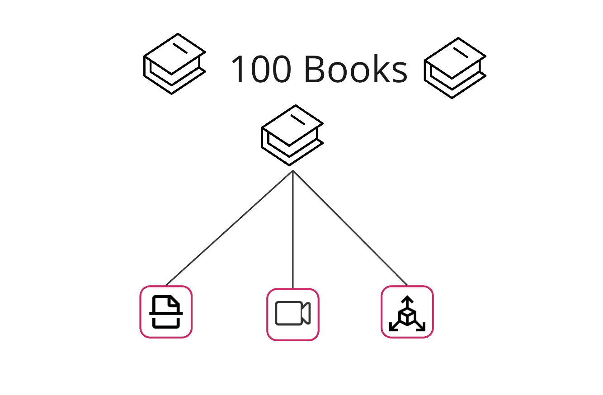

(K)ein Kinderspiel
zur interaktiven 3D-Visualisierung historischer Spielbilderbücher
mit Gametechnologie
Let's see what else we have
Zur Digitalisierung
Wie können diese Objekte
(auch für die Wissenschaft) sinnvoll digitalisiert werden?
Digitalisate
2D-Scan, Video & 3D model
Referenzkorpus: die Kategorien
Ziel: Parallele mediale Repräsentationen eines Buchobjekts

Digitalisierungsrelevante Eigenschaften der Bücher
Für die Wissenschaft
Mediale Transformation und neue Features (z.B. Zitation)
Das Pop-up 3D Projekt an der Stabi
Project team members
- Casilda de Zulueta: 3D Generalist
- Natalia Sucharek: Videographer, Photogrammetry specialist
- Fenya Troch: 3D Generalist
- Zoe Schubert: Project Coordinator & Digital Representation
- Jacky Lai: Dev Trainee
Support
- Initiator: Christian Mathieu
- Die Kinderbuchabteilung
- Digitalisierungszentrum Stabi
- Restaurierung
- IT der Stabi
- Exclusiver Support
Eine neue Dimension der Repräsentation
DOIs für Animationsabfolgen
IIIF 3D Manifeste